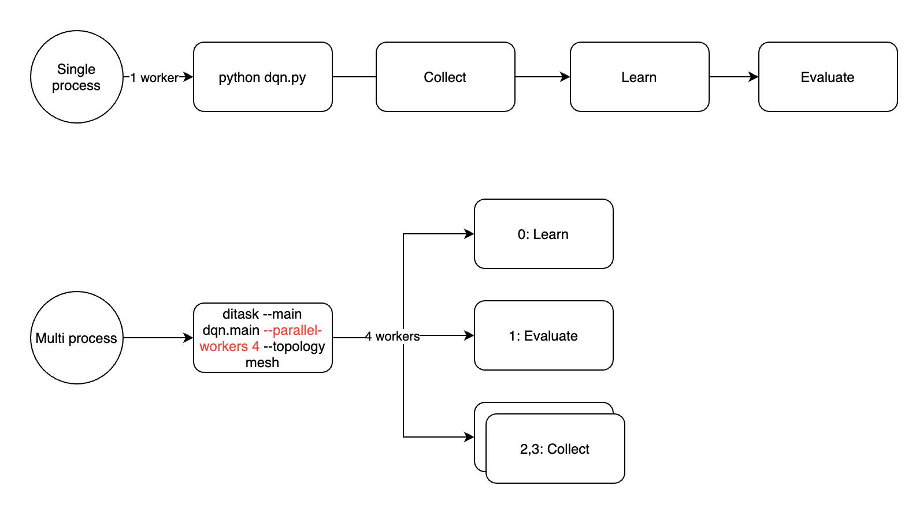
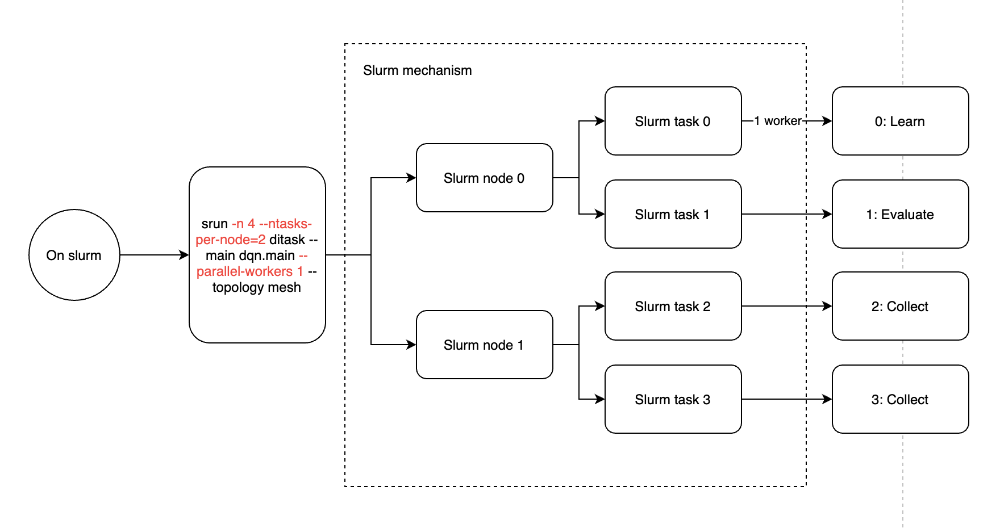
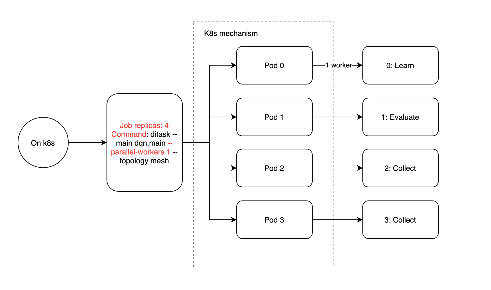
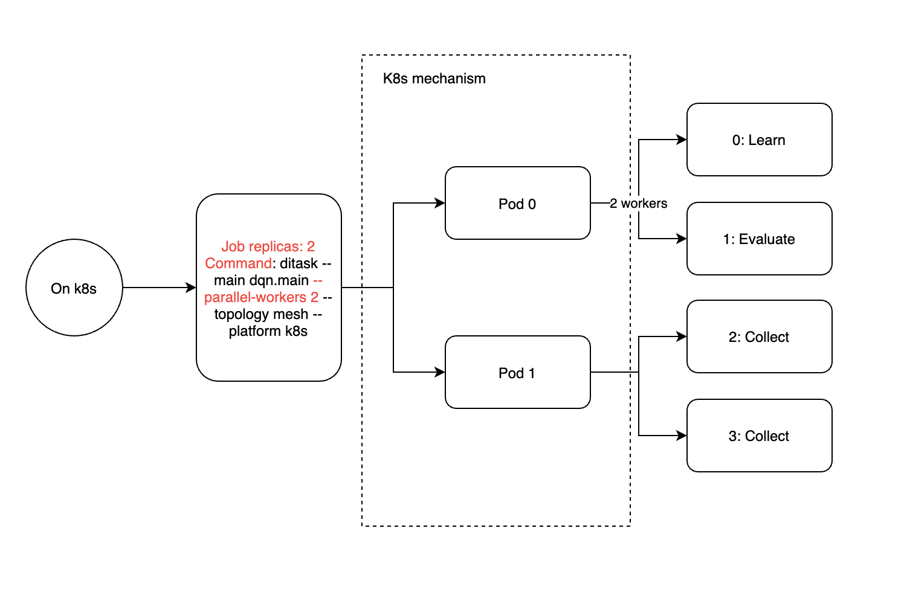

分布式¶
使用事件系统¶
在开始分布式运行之前，我们先介绍一下 DI-engine 的事件系统，所有远程调用都将使用事件系统。
事件系统是一种异步编程范式，好处是可以将不同逻辑的代码解耦，增加可读性，由于异步执行，资源利用率也会有一定提升。 事件系统也有一些缺点，由于异步调用，会给 debug 增加一些困难，我们会在之后的 代码规范 中介绍一些避免这类缺陷的方法。
task 对象上面提供了五个与事件系统有关的方法 —— emit, on, off, once, wait_for，我们主要介绍 emit 和 on 方法，
其他方法都是由这两个方法衍生的。
with task.start(async_mode=False, ctx=OnlineRLContext()):
task.on("greeting", lambda msg: print("Get msg: %s" % msg))
task.emit("greeting", "Hi")
# >>> Get msg: Hi
上面是事件系统的简单示例，通过 task.on 注册一个 greeting 事件的回调方法，通过 task.emit 触发事件并发送 msg 参数，参数是可变的，
只要 emit 和 on 的回调函数参数能对应即可。接下来我们将这两行代码拆分到不同的代码片段中（用中间件形式编写），它们也可以正常工作：
def receiver():
# 由于 on 是永久回调，所以我们只需要注册一次，如果只希望回调一次，可以使用 once
task.on("greeting", lambda msg: print("Get msg: %s" % msg))
def _receiver(ctx):
pass
return _receiver
def sender():
def _sender(ctx):
task.emit("greeting", "Hi %s times" % ctx.total_step)
return _sender
with task.start(async_mode=False, ctx=OnlineRLContext()):
task.use(receiver())
task.use(sender())
task.run(10)
这段代码将在一个进程内发送和接收十次 greeting 事件，下面我们来看看怎样在不同的进程使用它们。
并行化¶
Parallel 模块是 DI-engine 中的并行模块，它将使您的 main 函数在多个进程中运行。
它在内部集成了一个消息中间件，配合 task 的事件系统，您可以无感知的在进程间传递信息。

当使用 Parallel 执行代码时，task 内部的事件系统将自动将消息路由到相连的进程，
这样您就可以像在本地使用事件系统一样，使用来自其他进程的事件和数据。
def main():
with task.start(async_mode=False, ctx=OnlineRLContext()):
if task.router.node_id == 0: # 1
task.on("greeting", lambda msg: print("Get msg: %s" % msg))
else:
task.emit("greeting", "Hi") # 2
sleep(10) # 3
if __name__ == "__main__":
Parallel.runner(n_parallel_workers=2)(main) # 4
Note
您可以通过
task.router对象访问Parallel实例，获得当前进程的编号node_id，以便在不同的进程内执行不同的函数逻辑。您可以通过
task.emit的only_local和only_remote参数来控制数据的发送对象，默认将广播到所有进程。由于
task的with statement退出后，将清空所有的注册事件，所以在示例中我们使用 sleep 来防止 task 过早退出。您可以通过 api 文档查看
Parallel的其他参数，选择更多的网络模式，包括网格连接，星型连接，使用 redis 作为消息中间件等等。
在 Kubernetes 上部署¶
我们等价看待分布式运行和多进程运行，所以在代码上不需要做任何修改，即可从单机扩展到多机环境。 但是我们更推荐使用 kubernetes 来部署 DI-engine，以便更好的利用任务管理和资源隔离技术。
为了能在 kubernetes 上一键运行，我们推荐使用 DI-engine 提供的命令行工具 ditask 来代替直接通过 python 脚本启动程序。
ditask 支持 Parallel 模块的所有参数，您只需在代码中完成 main 函数，即可通过 ditask 启动程序。
ditask --package my_module --main my_module.main --parallel-workers 2
使用 ditask 可以在单机上启动多个进程。当我们使用 kubernetes 启动多个 pod 时，需要将所有 pod 的 ip 信息通过环境变量暴露给每个进程。
为此我们提供了一种特殊的 kubernetes 任务类型 DIJob 来实现这些环境变量的配置，无需您手动设置。
您可以通过 DI-orchestrator 安装 DIJob， 安装以后，下面的模板可以帮助您快速在 kubernetes 上部署 DI-engine：
apiVersion: diengine.opendilab.org/v2alpha1
kind: DIJob
metadata:
name: test
spec:
minReplicas: 3
maxReplicas: 3
template:
spec:
containers:
- name: di-container
image: opendilab/ding:latest
imagePullPolicy: Always
env:
- name: PYTHONUNBUFFERED
value: "1"
resources:
requests:
cpu: 6
memory: "10Gi"
limits:
cpu: 6
memory: "10Gi"
command: ["/bin/bash", "-c",]
args:
- |
ditask --package my_module --main my_module.main --parallel-workers 2
Note
以上模板将启动 6 个 DI-engine 进程（3 个 pod，每个 pod 两个进程）
Worker & Job & Pod & Task & Node & …¶
由于 DI-engine 支持单机，k8s 和 slurm 多种方式部署，而 k8s，slurm 本身也有类似 node 和 task 之类的概念，为了避免混淆，在此处做出一些说明。
def main():
with task.start(async_mode=False, ctx=OnlineRLContext()):
if task.router.is_active: # In distributed mode
if task.router.node_id == 0:
... # Use learner middlewares
elif task.router.node_id == 1:
... # Use evaluator middlewares
else:
... # Use collector middlewares
task.run()
if __name__ == "__main__":
main()
以上代码将任务按不同的 node_id 分为 1 learner + 1 evaluator + N collector （完整代码见 dqn.py ）， 其中 node_id 即为 ditask 中的 worker 数量，按 0 到 N 标记。假设我们设置 worker 数量为 4，则上述代码将分为四个进程， 依次序为 learner，evaluator 和 2 个 collector：
{kind=link}
Slurm 集群带来了 node 和 task 两个概念，node 表示集群节点，与物理机对应，每个 node 可以分配多个 task，与进程对应。所以在 slurm 中运行 ditask 时， 建议每个 ditask 只启用一个 worker（ditask 参数 –parallel-workers 1），slurm task 数量等于 4（srun 参数 -n 4）：
{kind=link}
以此类推，K8s 集群带来了 job 和 pod 的概念，一个 job 可以通过 replica 配置多个 pod，每个 pod 有定量的资源分配。此处 pod 相当于单机内的进程，或者 slurm 中的 task 概念。 所以我们建议在 k8s 中部署 ditask 时，每个 ditask 只启动一个 worker（ditask 参数 –parallel-workers 1），replica 数量为 4：
{kind=link}
假如出于某些特殊原因（例如因为 gpu 数量不足而希望减少 pod 数量），你仍然可以在 k8s 的 pod 或 slurm 的 task 中启用多个 ditask worker，实际执行的进程将按如下方式分配。 无论哪种方式，–parallel-workers 参数都只影响当前容器内的子进程数量，而整个训练任务的 worker 数量需要乘以 ditask 主进程数量（pod 数或 slurm task 数量）。
{kind=link}